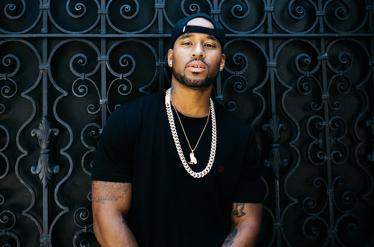

Artist Recommendations
Preme
Raynford Humphrey (born January 8, 1986), better known by his stage name Preme (formerly P Reign), is a Canadian rapper, singer and songwriter. He grew to fame with his single 'DnF' featuring Drake and Future. His debut album 'Light Of Day' debuted at 42 on the billboard charts and in my opinion, it is a very easy listen.Though he spends a lot of time with Drake and other OVO members, he is not actually signed to OVO, though people thought he was. Preme actually speaks on this saying "I don't work this hard, night in and night out, to not be able to be respected and hold my own weight.I have big respect for Drake but i dont want to be known as just Drake's friend."

Bryson Tiller
Bryson Djuan Tiller (born January 2, 1993) is an American singer, songwriter, and rapper. Born in Louisville, Kentucky, he started his career in 2011, releasing the debut mixtape titled Killer Instinct Vol.1. Tiller initially gained notable recognition following the release of his debut single, "Don't", which peaked at number 13 on the Billboard Hot 100. The record's success led to a deal with RCA Records and he released his debut studio album, Trapsoul in October 2015, which reached number eight on the Billboard 200. The album's second single "Exchange" has peaked at number 26 on the Billboard Hot 100 and earned him a Grammy nomination. He then released his second studio album 'True to Self' which featured the single 'Run Me Dry'. During the recording of True to Self, Tiller has been struggling with depression, which according to him can be heard in the music and was the reason of the album's disappointing commercial performance.Tiller says he will "probably never" do video interview, because he want to be a "shadowy figure".[48] According to Justin Charity of The Ringer, "Tiller’s lack of a full-time public persona is one of the young R&B singer’s most endearing qualities". Like Preme, he had success without the help of Drake, who wanted to sign Tiller to his label, OVO, with Tiller rejecting.

Roy Woods
Denzel Spencer (born April 18, 1996),better known by his stage name Roy Woods (stylized as Roy Wood$), is a Canadian singer and songwriter. He is signed to OVO Sound, of which was the record label that was co-founded by Canadian rapper and singer Drake, record producer Noah "40" Shebib and Oliver El-Khatib. He is also the founder of the collective, called Unlock The Underground. Woods has said some of his biggest influences are Michael Jackson, Drake, Nelly, The Weeknd and PartyNextDoor. At times, you can tell Michael Jackson is a major influence with Roy Woods style of singing.On July 11, 2015, Drake premiered the first song, called "Drama" from Woods' EP, titled Exis. The song was also premiered on Apple's Beats 1 radio during the first OVO Sound radio show. The track also features with the guest appearances from Woods' label boss, Drake. On July 25, 2015, a second song, titled "Get You Good" premiered on the second episode of the OVO Sound radio show. On July 31, 2015, Woods released his debut EP Exis digitally through OVO Sound, of which was the record label co-founded by Canadian rapper and singer Drake. On October 9, 2015, Woods released his first music video for his song, "Jealousy". It has since garnered over 9,000,000 views on YouTube. In 2016, Woods announced via Twitter that his new project, titled Waking at Dawn will be dropping soon. Waking at Dawn was released on July 1, 2016, promoted by Woods and other artists, including Drake and Wiz Khalifa through social media.On December 22, 2016, Woods released his second EP, titled Nocturnal. On July 20, 2017, Woods released the track, called "What Are You On?" as the lead single from his debut album, Say Less. On November 17, 2017, Woods released the title track, called "Say Less" along with the album pre-order. On December 1, 2017, Woods released his debut studio album, Say Less.

PnB Rock
Rakim Hasheem Allen (born December 9, 1991), better known by his stage name PnB Rock, is an American hip hop recording artist from Philadelphia, Pennsylvania.He was primarily raised by his mother due to his father being murdered when he was 3 years old. In his teen years, he lived in Northeast Philadelphia.He grew up listening to rapper 2Pac and R&B group Jodeci.At the age of 13, Rakim was sent to a youth detention program for committing robberies and fighting in school. When he turned 19, he was sentenced to 33 months in prison for drug possession and other crimes. Allen was homeless for a short period after being released from prison. This was where he said he learned to sing. He never finished high school. He is best known for his 2015 single, "Fleek" and 2016 single, "Selfish", which has peaked at number 51 on the US Billboard Hot 100. In 2017, Allen was chosen as part of the XXL Freshman Class which included rappers such as Lil Uzi Vert, Lil Yachty, 21 Savage and Denzel Curry.He released a mixtape in 2017 called 'Going Through The Motions' which put him into the limelight and then his debut album 'Catch The Vibes' at the end of 2017 which cemented his fame. He has a very unique way of singing and it is very easy to recognise him in songs.